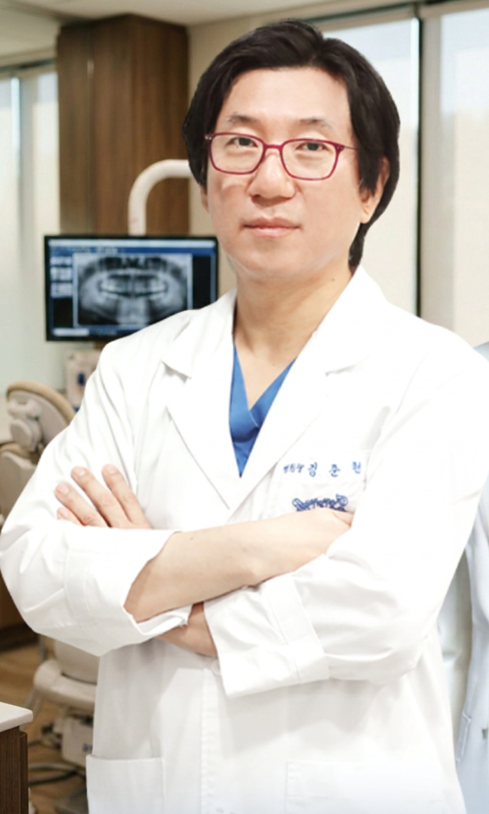
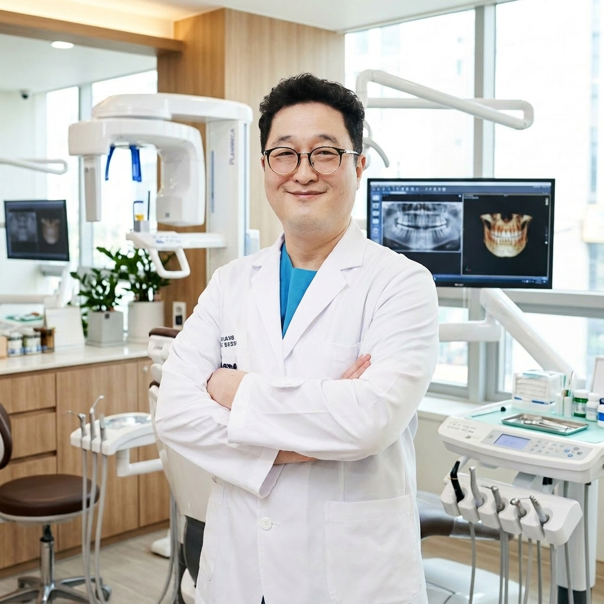

MEDICAL STAFF
사람을 향한 진심,
그 깊이가 다른 진료
30년 전통의 신뢰와 초정밀 기술력이 만나 당신의 미소를 완성합니다.

김준헌 병원장
치의학 박사 | 서울대학교 치과대학
"30년 전 처음 환자를 만났던 그 진심 그대로,
가장 정직하고 올바른 진료만이 환자의 삶을 바꿀 수 있다고 믿습니다."
약력 및 활동
- 서울대학교 치과대학 졸업
- 서울대학교 총동창회 26대 종신이사
- Goteborg University 브로네막 임플란트 교실 수료
- 치의학 박사 학위 취득
- 대한치과교정학회 표창 및 감사장 수령
- 기획재정부장관상 및 서울특별시장상 (모범납세자)
- 국제 임플란트 학회 (ICOI) 이사
전문분야
임플란트 수복, 고난이도 재수술, 심미 보철 솔루션

이봉진 대표원장
초정밀 심미보철 전문가 | 휘니쉬 프리미엄 디렉터
"0.1mm의 오차도 허용하지 않는 정밀함이
예술적인 아름다움과 완벽한 기능을 완성합니다."
약력 및 활동
- 연세대학교 치과대학 졸업
- 미국 인비절라인 인증의
- 대한구강악안면 임플란트학회 (KAOMI) 이사
- 세계구강임플란트학회 (ICOI KOREA) 이사
- 워랜텍 원플란트 임상지도 교수
- NICE 기술평가 우수기업인증 (임플란트 진료)
- 삼성꿈장학재단 청소년 치아교정 자원봉사
전문분야
휘니쉬 초정밀 솔루션, 투명 교정, 디지털 가이드 임플란트